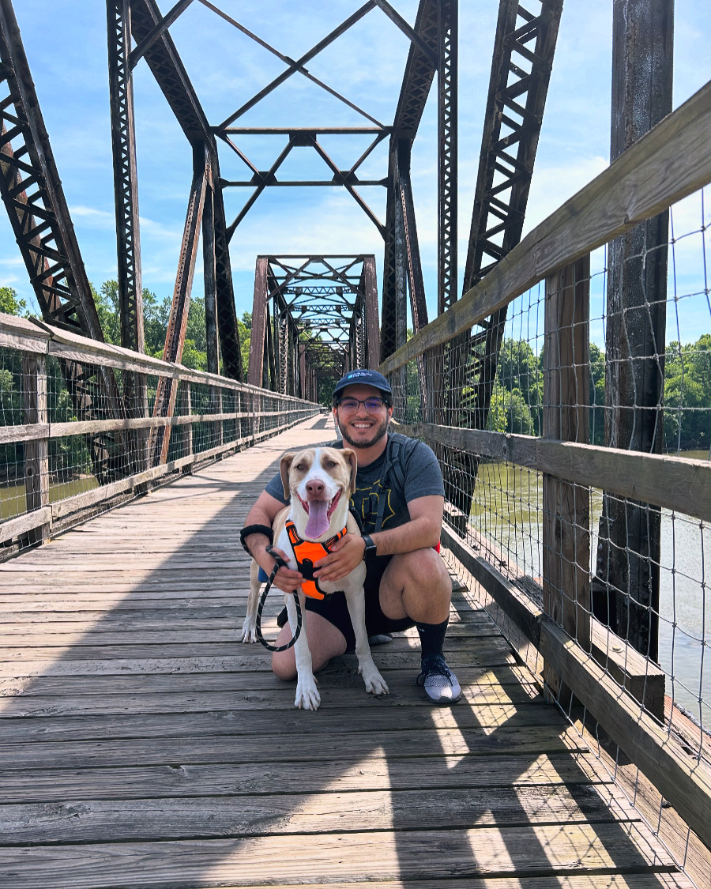

About
I am a PhD student in the Department of Biological Sciences at the University of South Carolina. I orginally started my academic journey as an undergrad at Kent State University (Kent, Ohio) where I majored in Environmental and Conservation Biology. While at Kent, I conducted undergraduate research with Dr. Dave Costello understanding nutrient decomposition and immobilization in urban streams. After Kent, I began a Masters program at the University of Central Arkansas (Conway, Arkansas) where I worked with Dr. Hal Halvorson. At Arkansas, I studied the ecolgical stoichiometry of urban streams in Little Rock to understand the impacts of urbanization of food web stochiometry for aquatic macroinvertebrate communities. This project involved intensive field work to collect samples in 15 streams across the Central Arkansas region. After finishing up my program, I started a PhD with Dr. Tad Dallas in his quantitative ecology lab. I learned during my masters work that I enjoy working with data and wanted to get more experience thinking about questions related to ecological theory. I currently work on projects related to spatial and community synchrony and how environmental variability as a function of climate change influences these patterns. I also test ecological theory in the Tribolium system to understand the effects of fragmentation and population density on metapopulation dynamics. Recently, I am beginning to think more about macroecological patterns of synchrony and macroecology in general.
Outside of research I enjoy hiking with Maverick (see picture below), adding some entries of cool bugs and plants to iNaturalist, and playing video games. I am always looking for people to collaborate with on different projects, so if my research interests are related to yours, reach out and let’s chat science! (see form below to contact me)
Feel free to contact me at: pignatea@email.sc.edu or anthonyjpignatelli@gmaiil.com
